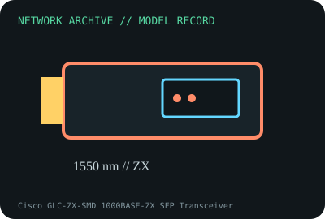

[ MODEL-SPECIFIC NETWORK HARDWARE RECORD ]
Cisco GLC-ZX-SMD 1000BASE-ZX SFP Transceiver
Long-reach 1550nm Gigabit SFP for engineered single-mode fiber links. Specifications are tied to this named product; confirm the physical label, revision and source documentation.

IDENTIFICATION: Verify exact PID/model, revision, label and host support. The catalog separates nominal PHY/link specifications from measured throughput; no benchmark is asserted unless explicitly recorded.
Model-specific specifications and compatibility
| Subcategory | SFP transceivers: optical and copper |
|---|---|
| Exact product/model | Cisco GLC-ZX-SMD 1000BASE-ZX SFP Transceiver |
| Bus, ports and physical interface | Hot-pluggable Gigabit SFP interface; duplex LC optical connector; compatible switch/router cage and firmware required. |
| PHY, radio or optical interface | 1000BASE-ZX extended-reach optical link at 1550nm over single-mode fiber. Cisco product data rates the link up to 70km under specified optical budget; long spans may need attenuators or engineering. |
| Nominal rate (not measured) | 1Gb/s nominal Ethernet link rate. 70km maximum link distance is a vendor link-budget figure; not throughput or a guaranteed span for arbitrary fiber. |
| Measured throughput | No lab optical-power or throughput measurement is claimed. Verify launch/receive power and link budget using calibrated equipment and the installed fiber path. |
| Driver, OS and firmware | No client driver; platform support and DOM monitoring require compatible switch/router software. Confirm module PID in Cisco compatibility matrix. |
| Platform/media compatibility | SMF only and long-range optic with a high optical budget; short patch links may overload the receiver and need a correctly sized attenuator. Never mate with SX/LH optics by connector fit alone. |
| Variant warning | GLC-ZX-SMD is not GLC-LH-SMD and not an 80km third-party “ZX” without equivalent optical budget. Exact revision, receiver overload limits, DOM and Cisco platform qualification matter. |
Revision, operation and measurement notes
GLC-ZX-SMD is not GLC-LH-SMD and not an 80km third-party “ZX” without equivalent optical budget. Exact revision, receiver overload limits, DOM and Cisco platform qualification matter.
No client driver; platform support and DOM monitoring require compatible switch/router software. Confirm module PID in Cisco compatibility matrix.
No lab optical-power or throughput measurement is claimed. Verify launch/receive power and link budget using calibrated equipment and the installed fiber path.
Archival, ESD and preservation notes
Preserve label, PID/serial, DOM readings and matching attenuation/patch accessories. Keep dust caps in place, use fiber inspection/cleaning procedures and ESD-safe storage.
Retain source provenance and the revision/date of each supporting document. Store public records without credentials, personal information or other secrets.
Primary manufacturer and standards sources
- Cisco Gigabit Ethernet SFP modules data sheetPrimary manufacturer or standards reference; confirm exact part label, revision, and platform qualification.
- Cisco transceiver compatibility matrixPrimary manufacturer or standards reference; confirm exact part label, revision, and platform qualification.
- IEEE 802.3 Ethernet standardsPrimary manufacturer or standards reference; confirm exact part label, revision, and platform qualification.
Manufacturer source links are provided for the stated model or exact product family; use the board label and the official revision-specific compatibility list for final qualification.